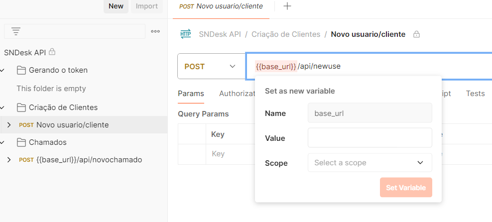

Como testar
Introdução
Para você começar a testar nossa API precisamos seguir alguns simples passos, caso ainda não tenha seu token de api Clique aqui!
Postman APP
Se você deseja usar o aplicativo do Postman, é possível baixar a collection através do link abaixo. Após obter o link de download, basta clicar nele para baixar o arquivo de coleção. Em seguida, abra o Postman e importe o arquivo de coleção clicando em "Import", selecionando "Import File", navegando até o local onde o arquivo está salvo e clicando em "Open". A coleção será então listada na barra lateral esquerda do Postman, onde você poderá expandi-la para visualizar e executar as requisições disponíveis.
Baixar collectionConfigurando Enviroment
Ao iniciar o Postman, o passo inicial é configurar a sua base_url para que corresponda à de sua empresa. Isso garantirá que todas as suas solicitações sejam direcionadas corretamente aos recursos da sua organização.
Configurando autorizações
Após configurar as rotas, atualize as informações na aba de Autorização, no SNDesk utilizamos Oath 2. Se o campo "Header Prefix" estiver vazio, preencha-o com "Bearer" para garantir que o cabeçalho de autorização seja configurado corretamente.
Após isso coloque o token de sua empresa no campo "Token", caso ainda não tenha o token acesse Conseguindo token SNDesk